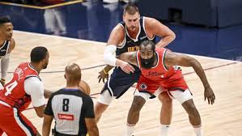
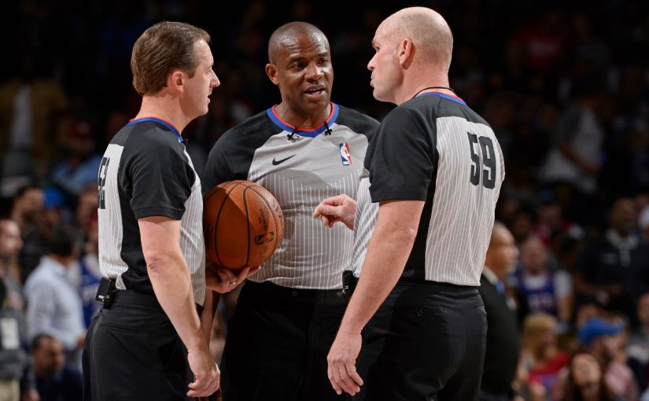
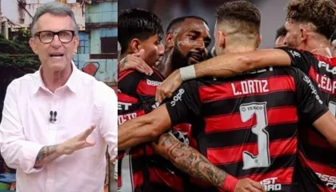

SportZone
Noticias
-

Cruzeiro vence o Vasco
Cruzeiro vence o Vasco por 1 a 0 no Brasileirão
Ir para Noticia
-
Jorjinho se aproxima do Flamengo
o fim da temporada se aproxima e possivelmente jorjinho pode chegar ao Flamengo
Ir pra noticia
- 
Clippers vencem os Nuggets
pelo resultado de 117 a 83
Ir para Noticia
-
Cristiano ronaldo está perto de chegar aos mil gols
Aos 40 anos, Cristiano Ronaldo segue fazendo história na caça aos 1000 gols
Ir para Noticia
- 
Arbitragem cometeu erro grave em momento decisivo dos playoffs
Neste domingo (26), o Detroit Pistons recepcionou o New York Knicks na Little Caesars Arena, para a quarta rodada dos playoffs da NBA.
Ir para Noticia
- 
Apos o Flamengo golear o Corinthians Neto Elogia Flamengo
Não tem nenhum time no futebol sul-americano. E no mundo, hoje, o Flamengo briga com Barcelona, Real Madrid, Manchester City, se fizer certinho, briga com todo mundo. Se botar o Flamengo na Champions League e na Premier League, briga pra ser campeão”, disse Neto.
Ir para Noticia